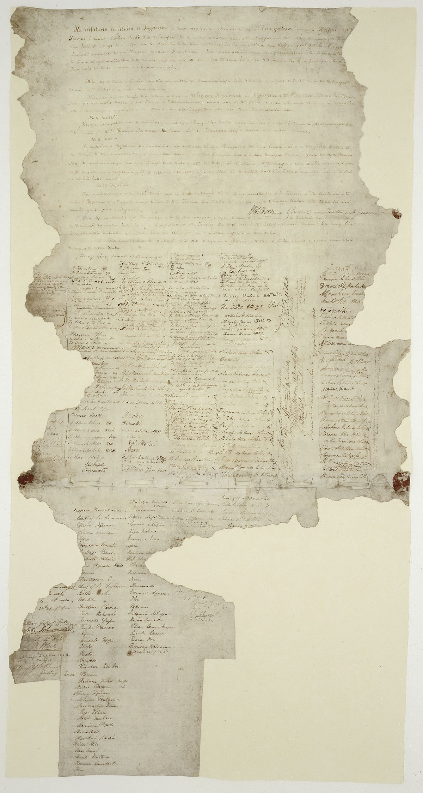

The Treaty of Waitangi is a foundational document in New Zealand's history, signed on February 6, 1840, between representatives of the British Crown and various Māori chiefs. It aimed to establish a partnership between the British government and Māori tribes, ensuring Māori rights, protection, and ownership of their lands, while also recognizing British sovereignty. However, there are ongoing debates and controversies regarding the interpretation and implementation of the treaty, particularly regarding its translation and the extent to which Māori rights have been upheld throughout history.
 Home Page